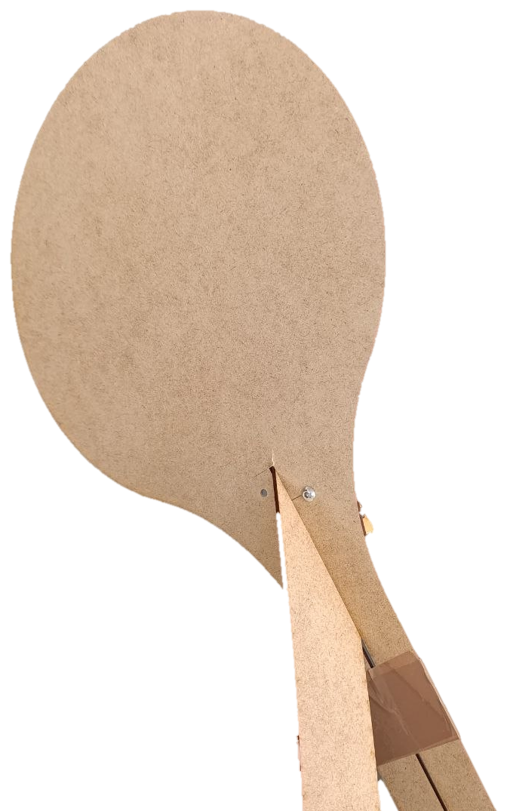
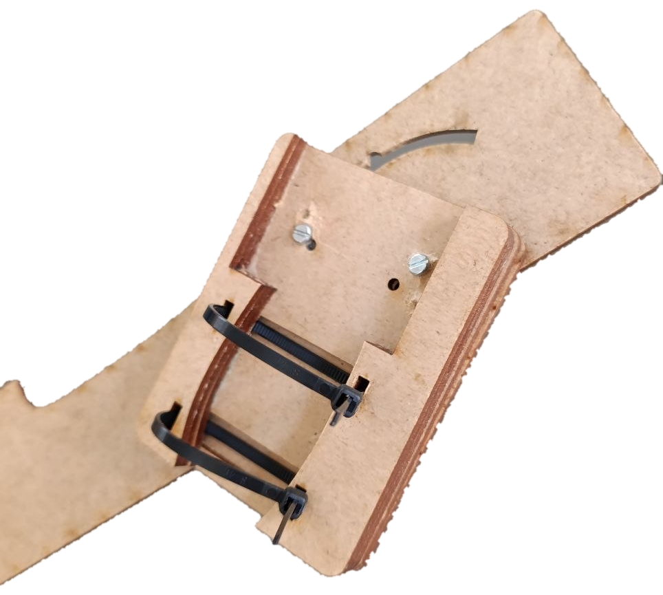

2026 · Mixed reality · Human–computer interaction
Magic Broom
VR Locomotion
A locmotion technique in VR that maps a rider’s leaning posture and controller input to the movement of a virtual broom—designed, implemented, and evaluated as part of the Human–Computer Interaction for Mixed Reality course at Télécom Paris.


Overview
Acceleration is done by leaning toward the tip of the broom, a controller button adds a smaller boost if needed, and calibration maps the physical broom and controllers into the virtual vehicle. Vertical steering happens through rotating the controller at the tip of the broom.
The work was evaluated with seven participants through guided setup, exploration, a complete race, the Igroup Presence Questionnaire, the Simulator Sickness Questionnaire, and a short interview. Participants reported strong involvement and spatial presence, while the results also exposed moderate cybersickness.
An accompanying web experience documents the full course process.
- Prototype
- Unity VR
- Interaction
- Lean + controller
- Evaluation
- 7 participants